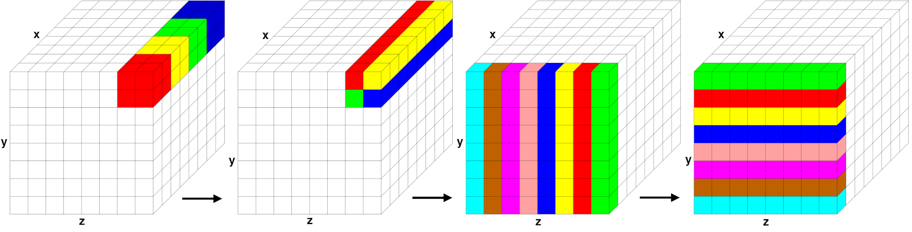

\(\renewcommand{\AA}{\text{Å}}\)
4.4.4. Long-range interactions
For charged systems, LAMMPS can compute long-range Coulombic interactions via the FFT-based particle-particle/particle-mesh (PPPM) method implemented in kspace style pppm and its variants. For that Coulombic interactions are partitioned into short- and long-range components. The short-ranged portion is computed in real space as a loop over pairs of charges within a cutoff distance, using neighbor lists. The long-range portion is computed in reciprocal space using a kspace style. For the PPPM implementation the simulation cell is overlaid with a regular FFT grid in 3d. It proceeds in several stages:
each atom’s point charge is interpolated to nearby FFT grid points,
a forward 3d FFT is performed,
a convolution operation is performed in reciprocal space,
one or more inverse 3d FFTs are performed, and
electric field values from grid points near each atom are interpolated to compute its forces.
For any of the spatial-decomposition partitioning schemes each processor owns the brick-shaped portion of FFT grid points contained within its subdomain. The two interpolation operations use a stencil of grid points surrounding each atom. To accommodate the stencil size, each processor also stores a few layers of ghost grid points surrounding its brick. Forward and reverse communication of grid point values is performed similar to the corresponding atom data communication. In this case, electric field values on owned grid points are sent to neighboring processors to become ghost point values. Likewise charge values on ghost points are sent and summed to values on owned points.
For triclinic simulation boxes, the FFT grid planes are parallel to the box faces, but the mapping of charge and electric field values to/from grid points is done in reduced coordinates where the tilted box is conceptually a unit cube, so that the stencil and FFT operations are unchanged. However the FFT grid size required for a given accuracy is larger for triclinic domains than it is for orthogonal boxes.

Parallel FFT in PPPM
Stages of a parallel FFT for a simulation domain overlaid with an 8x8x8 3d FFT grid, partitioned across 64 processors. Within each of the 4 diagrams, grid cells of the same color are owned by a single processor; for simplicity, only cells owned by 4 or 8 of the 64 processors are colored. The two images on the left illustrate brick-to-pencil communication. The two images on the right illustrate pencil-to-pencil communication, which in this case transposes the y and z dimensions of the grid.
Parallel 3d FFTs require substantial communication relative to their computational cost. A 3d FFT is implemented by a series of 1d FFTs along the x-, y-, and z-direction of the FFT grid. Thus, the FFT grid cannot be decomposed like atoms into 3 dimensions for parallel processing of the FFTs but only in 1 (as planes) or 2 (as pencils) dimensions and in between the steps the grid needs to be transposed to have the FFT grid portion “owned” by each MPI process complete in the direction of the 1d FFTs it has to perform. LAMMPS uses the pencil-decomposition algorithm as shown in the Parallel FFT in PPPM figure.
Initially (far left), each processor owns a brick of same-color grid cells (actually grid points) contained within in its subdomain. A brick-to-pencil communication operation converts this layout to 1d pencils in the x-dimension (center left). Again, cells of the same color are owned by the same processor. Each processor can then compute a 1d FFT on each pencil of data it wholly owns using a call to the configured FFT library. A pencil-to-pencil communication then converts this layout to pencils in the y dimension (center right) which effectively transposes the x and y dimensions of the grid, followed by 1d FFTs in y. A final transpose of pencils from y to z (far right) followed by 1d FFTs in z completes the forward FFT. The data is left in a z-pencil layout for the convolution operation. One or more inverse FFTs then perform the sequence of 1d FFTs and communication steps in reverse order; the final layout of resulting grid values is the same as the initial brick layout.
Each communication operation within the FFT (brick-to-pencil or pencil-to-pencil or pencil-to-brick) converts one tiling of the 3d grid to another, where a tiling in this context means an assignment of a small brick-shaped subset of grid points to each processor, the union of which comprise the entire grid. The parallel fftMPI library written for LAMMPS allows arbitrary definitions of the tiling so that an irregular partitioning of the simulation domain can use it directly. Transforming data from one tiling to another is implemented in fftMPI using point-to-point communication, where each processor sends data to a few other processors, since each tile in the initial tiling overlaps with a handful of tiles in the final tiling.
The transformations could also be done using collective communication
across all \(P\) processors with a single call to MPI_Alltoall(), but
this is typically much slower. However, for the specialized brick and
pencil tiling illustrated in Parallel FFT in PPPM figure, collective
communication across the entire MPI communicator is not required. In
the example, an \(8^3\) grid with 512 grid cells is partitioned
across 64 processors; each processor owns a 2x2x2 3d brick of grid
cells. The initial brick-to-pencil communication (upper left to upper
right) only requires collective communication within subgroups of 4
processors, as illustrated by the 4 colors. More generally, a
brick-to-pencil communication can be performed by partitioning P
processors into \(P^{\frac{2}{3}}\) subgroups of
\(P^{\frac{1}{3}}\) processors each. Each subgroup performs
collective communication only within its subgroup. Similarly,
pencil-to-pencil communication can be performed by partitioning P
processors into \(P^{\frac{1}{2}}\) subgroups of
\(P^{\frac{1}{2}}\) processors each. This is illustrated in the
figure for the \(y \Rightarrow z\) communication (center). An
eight-processor subgroup owns the front yz plane of data and performs
collective communication within the subgroup to transpose from a
y-pencil to z-pencil layout.
LAMMPS invokes point-to-point communication by default, but also provides the option of partitioned collective communication when using a kspace_modify collective yes command to switch to that mode. In the latter case, the code detects the size of the disjoint subgroups and partitions the single P-size communicator into multiple smaller communicators, each of which invokes collective communication. Testing on a large IBM Blue Gene/Q machine at Argonne National Labs showed a significant improvement in FFT performance for large processor counts; partitioned collective communication was faster than point-to-point communication or global collective communication involving all P processors.
Here are some additional details about FFTs for long-range and related grid/particle operations that LAMMPS supports:
The fftMPI library allows each grid dimension to be a multiple of small prime factors (2,3,5), and allows any number of processors to perform the FFT. The resulting brick and pencil decompositions are thus not always as well-aligned, but the size of subgroups of processors for the two modes of communication (brick/pencil and pencil/pencil) still scale as \(O(P^{\frac{1}{3}})\) and \(O(P^{\frac{1}{2}})\).
For efficiency in performing 1d FFTs, the grid transpose operations illustrated in Figure Parallel FFT in PPPM also involve reordering the 3d data so that a different dimension is contiguous in memory. This reordering can be done during the packing or unpacking of buffers for MPI communication.
For large systems and particularly many MPI processes, the dominant cost for parallel FFTs is often the communication, not the computation of 1d FFTs, even though the latter scales as \(N \log(N)\) in the number of grid points N per grid direction. This is due to the fact that only a 2d decomposition into pencils is possible while atom data (and their corresponding short-range force and energy computations) can be decomposed efficiently in 3d.
Reducing the number of MPI processes involved in the MPI communication will reduce this kind of overhead. By using a hybrid MPI + OpenMP parallelization it is still possible to use all processes for parallel computation. It will use OpenMP parallelization inside the MPI domains. While that may have a lower parallel efficiency for some part of the computation, that can be less than the communication overhead in the 3d FFTs.
As an alternative, it is also possible to start a multi-partition calculation and then use the verlet/split integrator to perform the PPPM computation on a dedicated, separate partition of MPI processes. This uses an integer “1:p” mapping of p subdomains of the atom decomposition to one subdomain of the FFT grid decomposition and where pairwise non-bonded and bonded forces and energies are computed on the larger partition and the PPPM kspace computation concurrently on the smaller partition.
LAMMPS also implements PPPM-based solvers for other long-range interactions, dipole and dispersion (Lennard-Jones), which can be used in conjunction with long-range Coulombics for point charges.
LAMMPS implements a
GridCommclass which overlays the simulation domain with a regular grid, partitions it across processors in a manner consistent with processor subdomains, and provides methods for forward and reverse communication of owned and ghost grid point values. It is used for PPPM as an FFT grid (as outlined above) and also for the MSM algorithm, which uses a cascade of grid sizes from fine to coarse to compute long-range Coulombic forces. The GridComm class is also useful for models where continuum fields interact with particles. For example, the two-temperature model (TTM) defines heat transfer between atoms (particles) and electrons (continuum gas) where spatial variations in the electron temperature are computed by finite differences of a discretized heat equation on a regular grid. The fix ttm/grid command uses theGridCommclass internally to perform its grid operations on a distributed grid instead of the original fix ttm which uses a replicated grid.